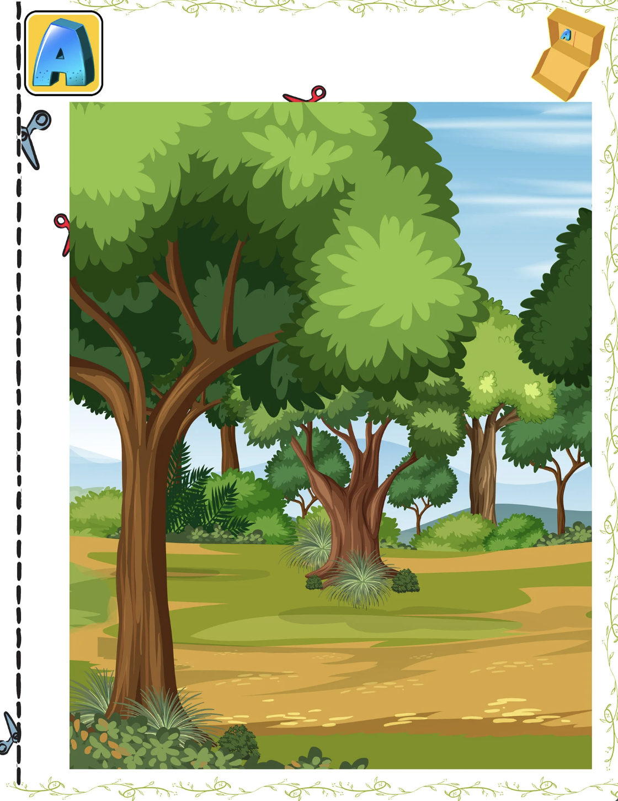
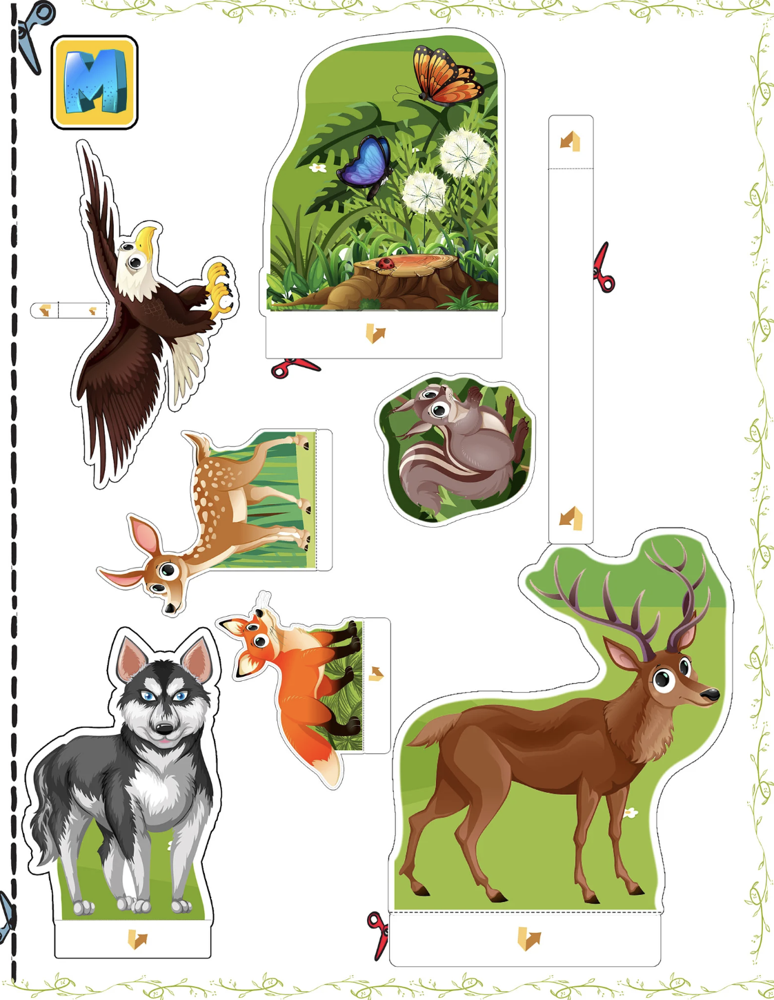

Forest Habitat Diorama for Kids
Turn a simple box into a colorful 3D forest habitat filled with trees, plants and woodland animals. Students print, cut and arrange the pieces to create their own forest scene.
A hands-on animal habitat and ecosystem project for school assignments, science activities and creative learning in the Philippines.
See the Project
Build a 3D Forest Habitat
The printable set contains illustrated forest backgrounds, woodland scenery and separate animal pieces. Children can cut out the parts, position the animals and transform a box into a layered forest habitat model.
Printable Forest Backgrounds
The background pages create different layers of the forest, from open woodland to a denser area with large trees, rocks and plants.


Add the Forest Animals
Separate printable animals can be cut out, folded at their bases and placed around the habitat. Students decide where each animal belongs in their forest scene.


Print, Cut, Build & Learn
The printable provides the artwork and structure while students do the hands-on work of assembling and arranging their own forest habitat.
A School Project Kids Can Personalize
The printable gives children a strong starting point, but the finished habitat can still become their own project. Add leaves, twigs, stones or other safe craft materials to create extra texture and detail.
Printable Forest Habitat PDF
This is a digital printable school project. The secure checkout and instant PDF download will be connected next.